Продуктовый дизайнер. 6+ лет опыта в B2B и B2C. Работал над CRM-системами, сложными интерфейсами для бизнеса и сервисами для массовой аудитории. Умею делать яркий и удобный дизайн.
Редизайн сервиса email-рассылок → Остановил падение и вернул рост MAU
смотретьОнбординг CRM: рост конверсии в оплату ×2.3
смотреть8 ярких UI-работ, на которые приятно смотреть
смотреть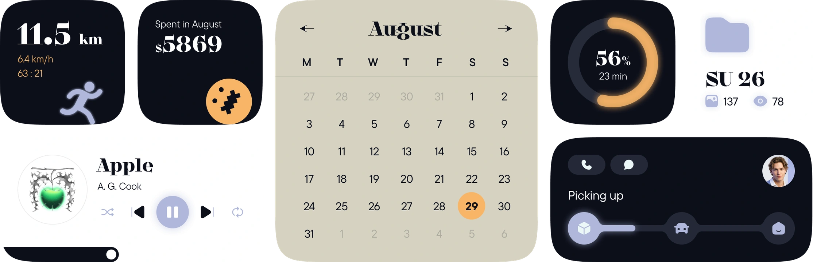
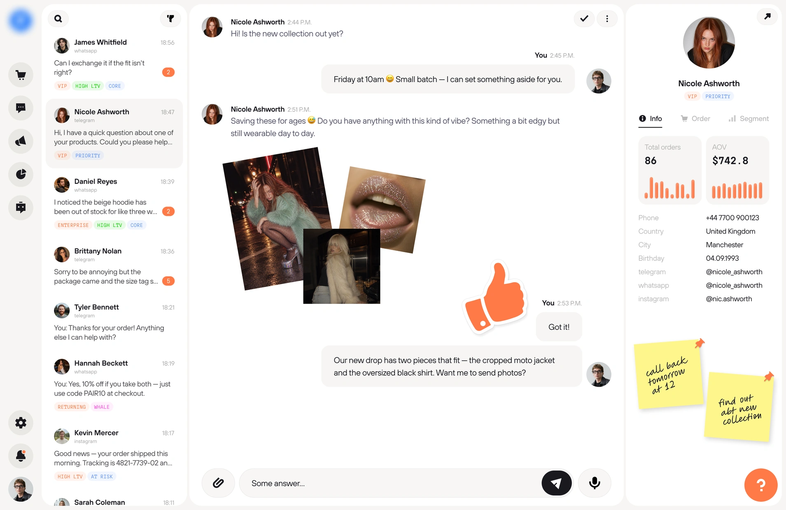
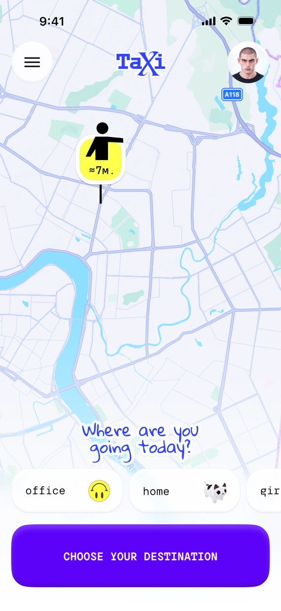
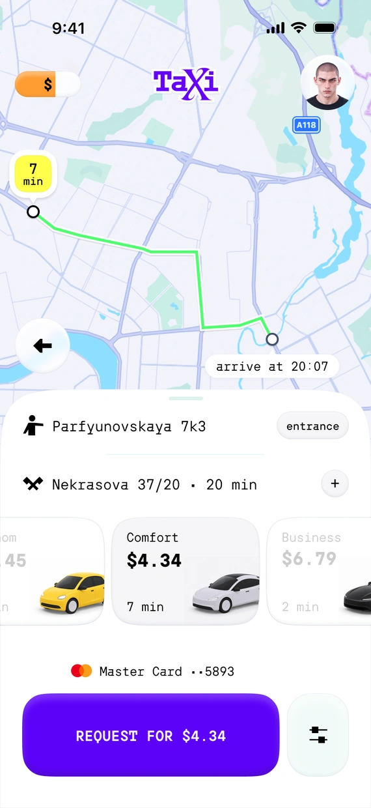
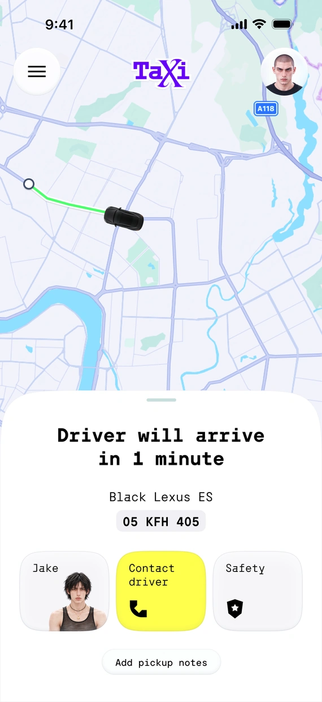
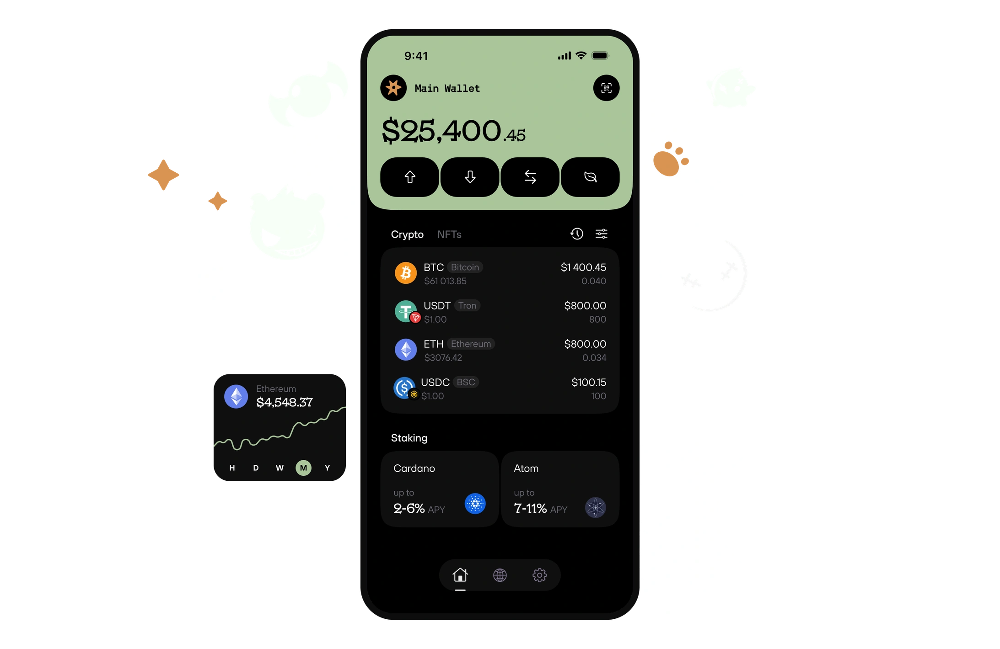
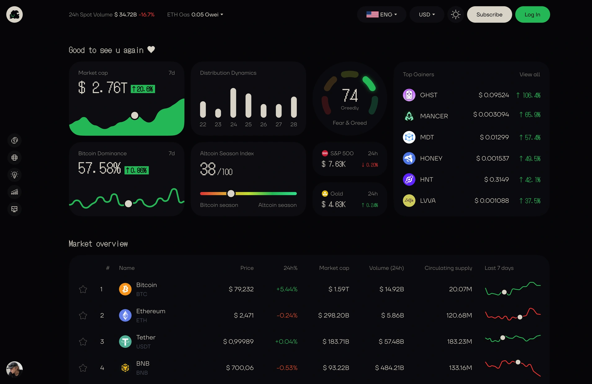
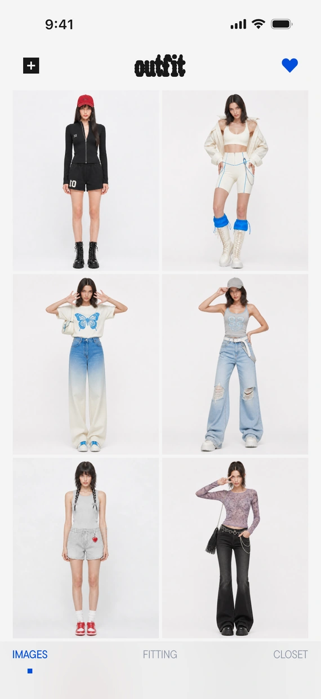
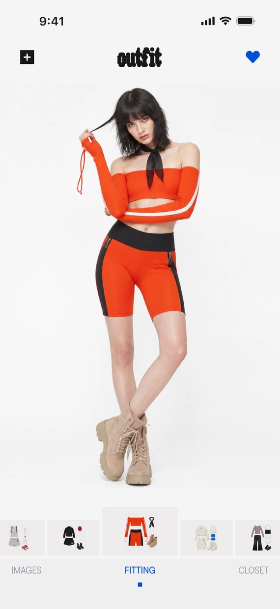
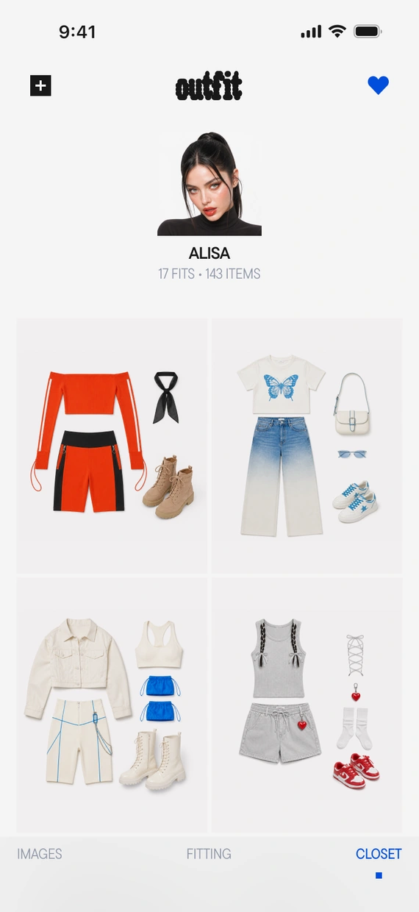
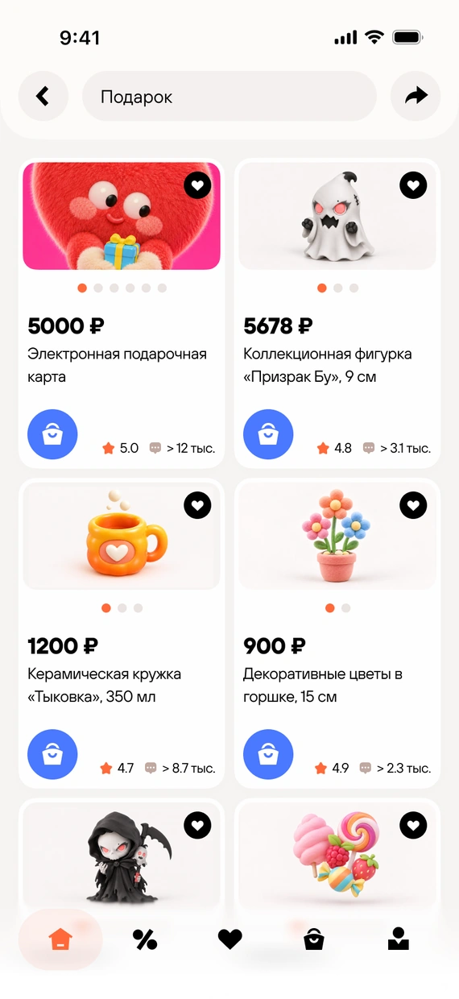
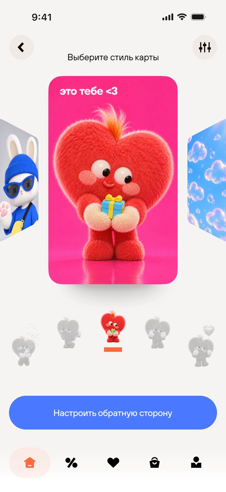
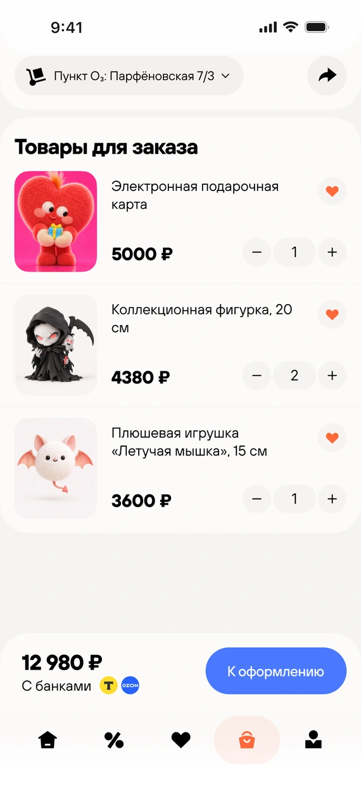
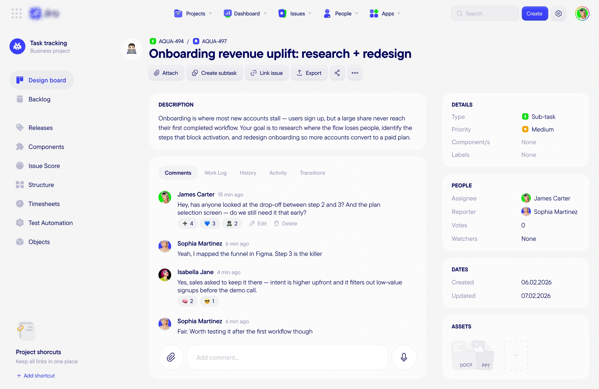